2027 日本中部冬季自駕
📅 2027年1月9日 – 1月17日 ・9日8夜 ・D2–D8 4WD＋雪軚自駕
冬季道路安全優先， 唔為 Bonus 景點硬趕夜路。
新穗高／白川鄉按天氣互換， 好天優先搶雪山。
景點／酒店旁邊撳 📍， 直接開駕車導航。
DAY 1
🏯 香港 → 名古屋 → 松本
9 Jan 2027・星期六
香港機場 T2 → 中部國際機場
→ 名古屋 → JR 特急信濃 → 松本


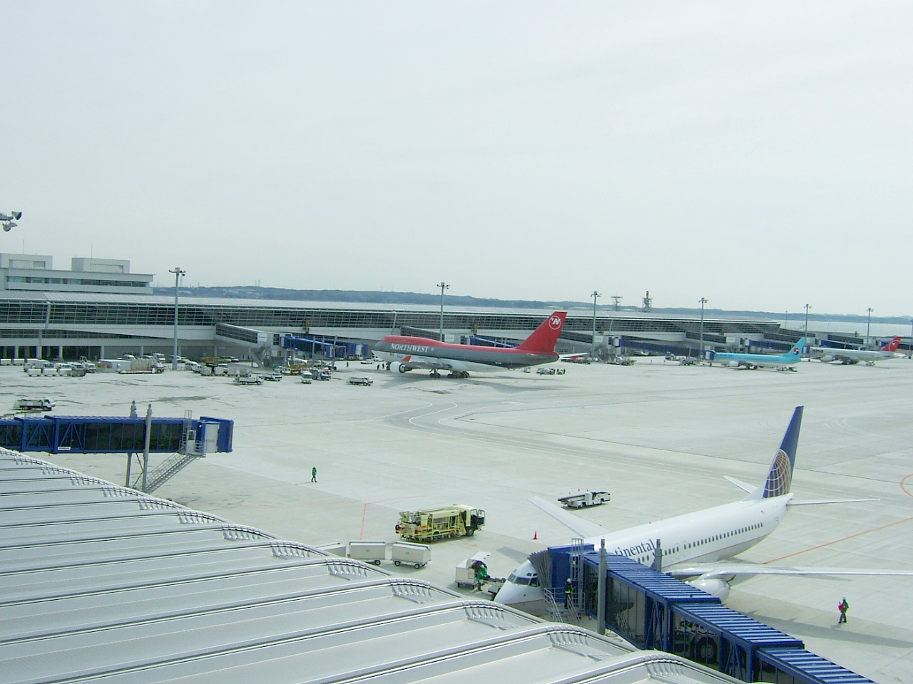
香港國際機場 T2
UO680 規劃 10:00 起飛。 建議約 06:45 到 T2， 預留寄行李、保安及早餐時間。
HK Express Bag Drop
辦理 UO680 及寄行李。 最遲截行李時間出發前再確認。
香港國際機場
完成保安及出境後食早餐， 約 09:20 開始向登機閘口移動。
UO680 香港 → 名古屋
規劃時間 10:00 → 14:30。 最終航班時間出發前再核對。
中部國際機場 T2
主行程保守預 75 分鐘處理入境及行李。 如果實際 30–45 分鐘已出禁區， 只會令名古屋轉車時間更鬆。
中部機場 → 名古屋
T2 前往 Access Plaza／名鐵站， 再乘 μSKY。 2027 正式班次出發前再確認。
名鐵名古屋 → JR 名古屋
預約 1 小時 Buffer。 入境快可買 JR 車票、 食少量食物或休息。
特急信濃・名古屋 → 松本
現行參考約 17:40 → 19:46。 冬季大雪有機會慢車或延誤。
TABINO HOTEL lit 松本
已訂豪華雙人房、非吸煙。 D1 酒店不包早餐。
松本城 Projection Mapping
準時抵達而且有精神， 可睇約 30–45 分鐘夜間光影。 夜晚只睇外觀，不能進入天守。
免費
DAY 2
🌋 松本 → 白絲瀑布 → 鬼押出園 → 輕井澤 → 千曲
10 Jan 2027・星期日
松本城外圍 → Times 取車
→ 白絲瀑布 → 鬼押出園
→ 輕井澤 Outlet → 千曲

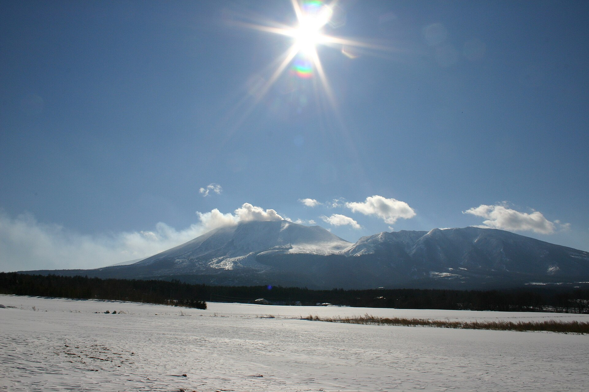
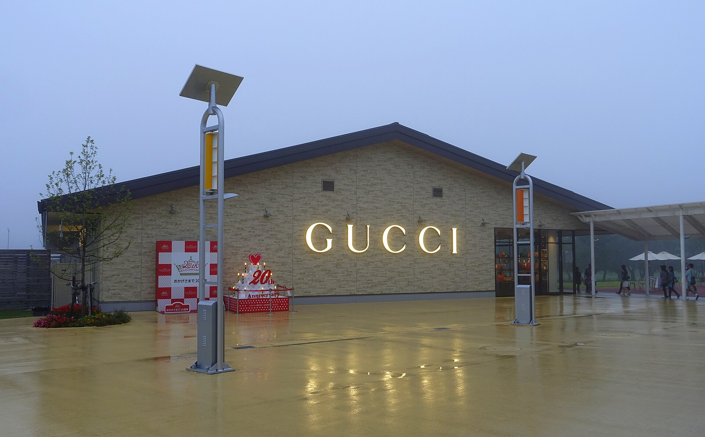
松本站一帶
酒店不包早餐。 早餐後 Check-out， 行李可暫放酒店。
松本城外圍
松本城係日本現存 12 座天守之一。 今日以外圍 25–30 分鐘為主。
外圍免費TABINO → Times 松本站前
回酒店拎行李， 到 Times 完成文件及驗車。
Times 4WD＋雪軚
10:00 正式取車， 完成車身檢查後向白絲瀑布出發。
松本 → 白絲瀑布
山岳道路， 冬季要預留更多時間。
白絲瀑布
高約 3 米、闊約 70 米。 冬季積雪同冰柱係最大特色。 停車後步行約 200 米。
瀑布免費・道路約 ¥500/車白絲瀑布 → 鬼押出園
冬季視道路狀況慢行。
鬼押出園
1783 年淺間山大噴發留下嘅大型熔岩地貌。 冬季黑色熔岩配白雪最有特色。 約 45–60 分鐘。
成人約 ¥700鬼押出園／附近
簡單午餐， 避免壓縮 Outlet 時間。
鬼押出園 → 輕井澤
雪天再預鬆。
輕井澤王子購物廣場
約 90 分鐘精華 Shopping。 優先處理最想買嘅品牌。
輕井澤 → 千曲
約 1小時20分。 直接去戶倉上山田溫泉， 唔再繞上田。
Club Wyndham 千曲館
已訂一泊二食。 晚餐時間有要求就縮短 Outlet， 唔縮道路 Buffer。
千曲館
住宿包晚餐。 飯後可浸溫泉。
只係白絲 Highland Way／鬼押一帶 封閉或嚴重結冰先啟動。
DAY 3
🌰 千曲 → 小布施 → JA Oranche → 澀溫泉
11 Jan 2027・星期一・成人の日
千曲 → 小布施舊街／栗之小徑
→ JA 農產直賣 → 澀溫泉 → 九湯巡禮
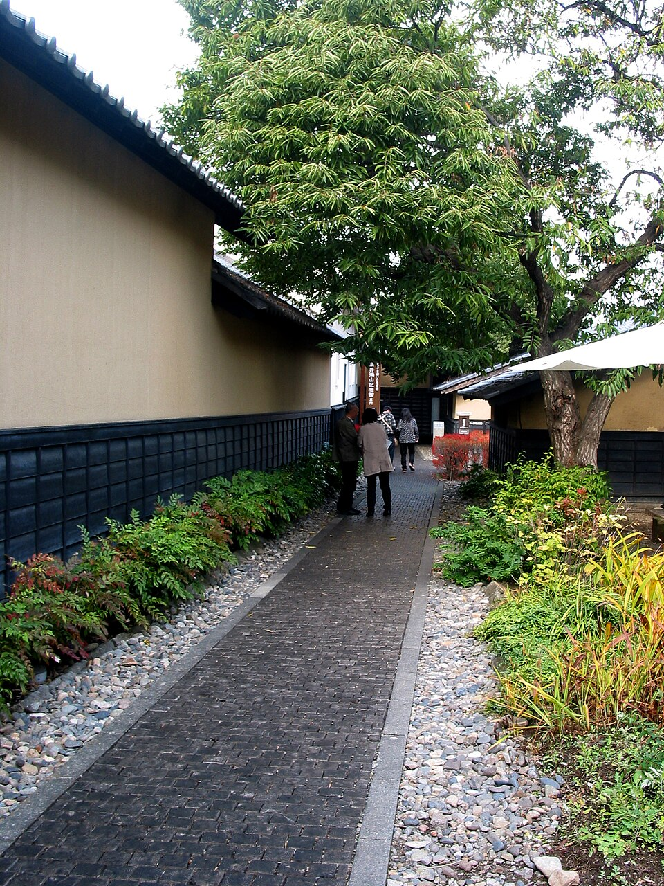

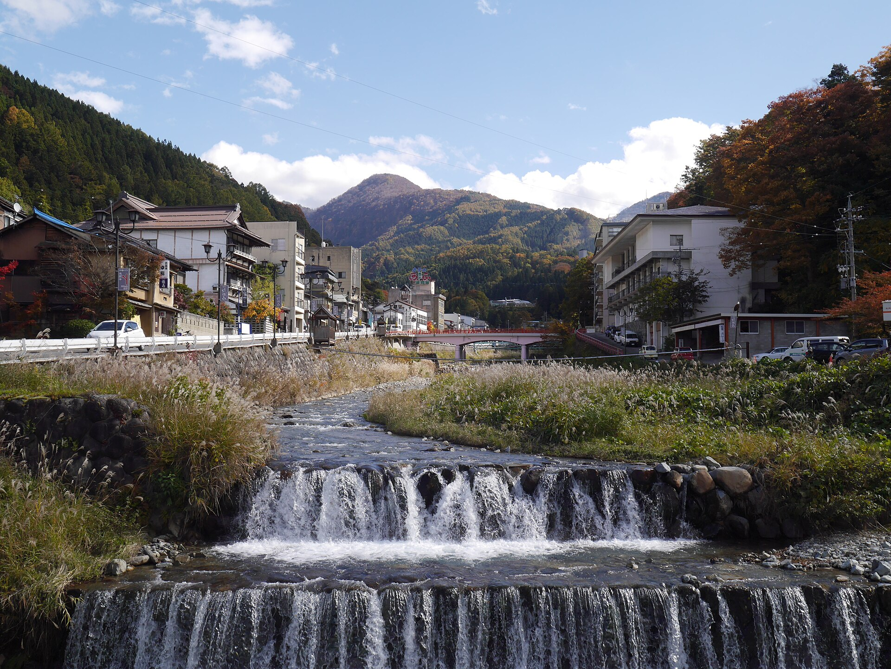
千曲館
旅館早餐。
千曲 → 小布施
今日係成人の日， 刻意唔安排 Snow Monkey。
小布施舊街＋栗之小徑
主力街景、栗子甜品、 栗おこわ及手信。
免費北齋館
只係有興趣先入， 約 30–45 分鐘。
成人約 ¥1,200小布施
可選蕎麥麵／栗おこわ。
小布施 → JA Oranche
往信州中野方向。
JA 中野市農產物產館 Oranche
地元 JA 農產直賣所。 有蔬菜、菇菌、蘋果及加工品。
JA Oranche → 澀溫泉
入溫泉街前按旅館指示泊車， 唔好跟導航亂入窄巷。
澀溫泉街
先認路、影相， 15:00 再入住。
一乃湯果亭＋九湯巡禮
住區內旅館可借專用鎖匙 進入九個共同浴場。 穿浴衣沿石板街巡湯係核心體驗。
住客免費一乃湯果亭
住宿包晚餐。
澀溫泉街
飯後再浸外湯， 浴衣散步及睇夜景。
DAY 4
🐒 澀溫泉 → 地獄谷 → 須坂 → 長野
12 Jan 2027・星期二
澀溫泉 → 上林 → 地獄谷野猿公苑
→ AEON Mall 須坂 → 長野
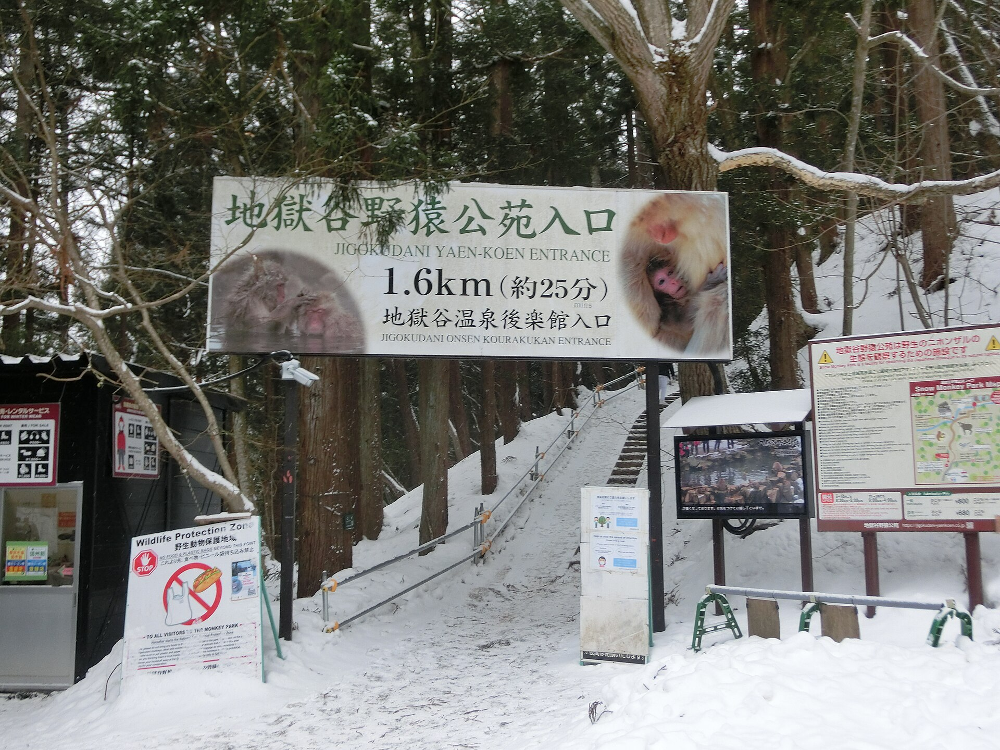
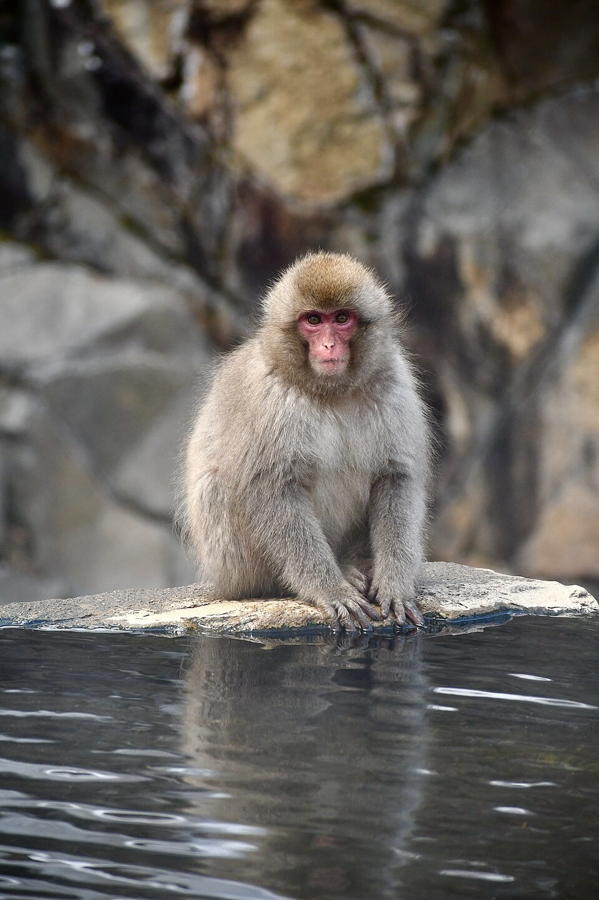
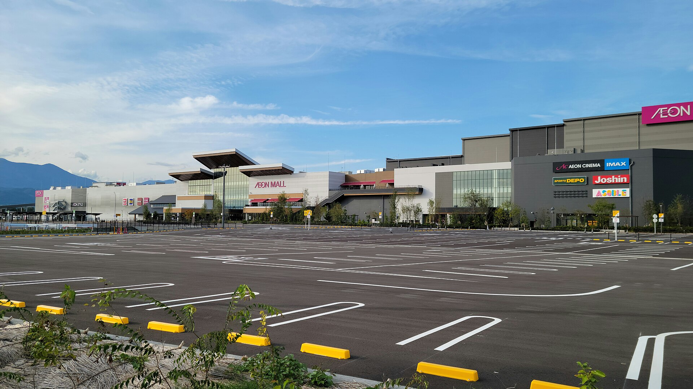
一乃湯果亭
住宿包早餐。
澀溫泉 → 上林
退房後前往 Snow Monkey 入口。 冬季導航去上林停車場，唔好導航去山入面 Jigokudani Parking。
上林 → 地獄谷
約 30–35 分鐘林道。
地獄谷野猿公苑
冬季長期積雪。 猴子係真正生活喺附近山林嘅野生日本獼猴。 是否浸溫泉視當日情況。
成人現行約 ¥800地獄谷 → 上林
原路返回。
上林 → 須坂
約 40 分鐘。
須坂
簡單午餐。
AEON Mall 須坂
食品、生果、日用品、 服裝、藥妝同補給。 預約 3.5 小時。
AEON 須坂 → 長野
約 40 分鐘。 Shopping 唔再延長。
Hotel JAL City Nagano
翌朝包兩位早餐。
長野市內
飯後有精神可去 Donki／長野站附近。
DAY 5
🏔️ 長野 → 白馬岩岳 → 高山
13 Jan 2027・星期三
長野 → 白馬岩岳
→ MOUNTAIN HARBOR
→ WHITE PARK → 高山
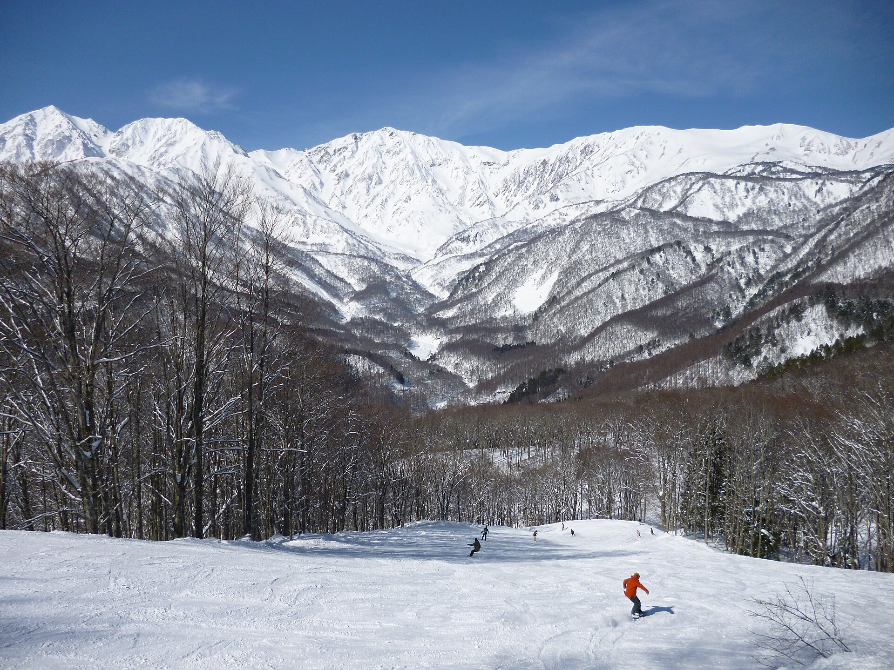
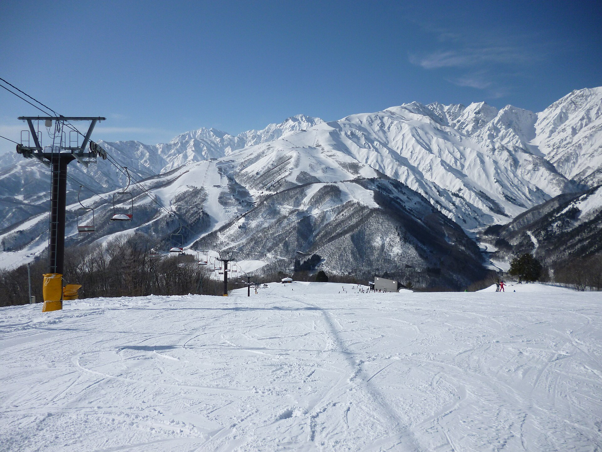
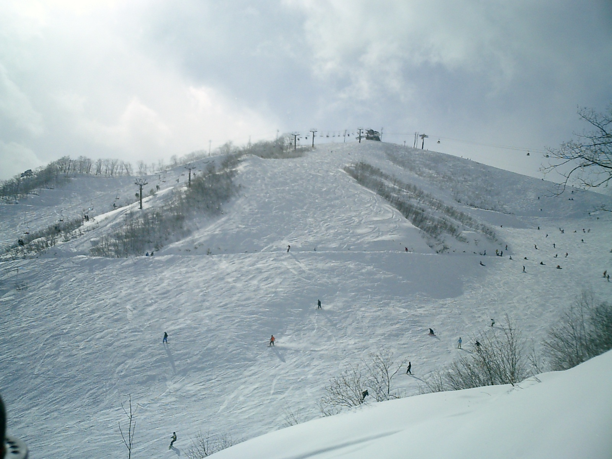
Hotel JAL City Nagano
已包兩位自助早餐。
長野
執行李後出發。
長野 → 白馬岩岳
冬季預鬆，遇大雪唔趕。 導航去岩岳 Mountain Resort 山腳，唔好導航去 Mountain Harbor 山頂。
山麓 → 山頂
使用非滑雪旅客觀光票。
白馬岩岳 Mountain Resort
當純雪景景點， 唔係滑雪行程。
參考約 ¥2,900/人HAKUBA MOUNTAIN HARBOR
正面望白馬三山及北阿爾卑斯。 一般車唔可以直接駛上山頂。
IWATAKE WHITE PARK
玩雪、散步及影相。
山頂 → 山麓
落山後午餐。
白馬
食完直接去高山。
白馬 → 高山
約 3小時10分。 冬季長途山路， 唔為 Bonus 拖到夜晚。
飛驒花里之湯 高山櫻庵
已訂兩晚， 有天然溫泉及露天風呂。
高山櫻庵
D5 以休息為主。
高山市內
第一晚晚餐彈性。
DAY 6
🏯 Weather Day 1・新穗高／高山市區
14 Jan 2027・星期四
極好天：高山 → 新穗高 → 高山
｜ 普通／差天：高山市區 → 飛驒大鐘乳洞
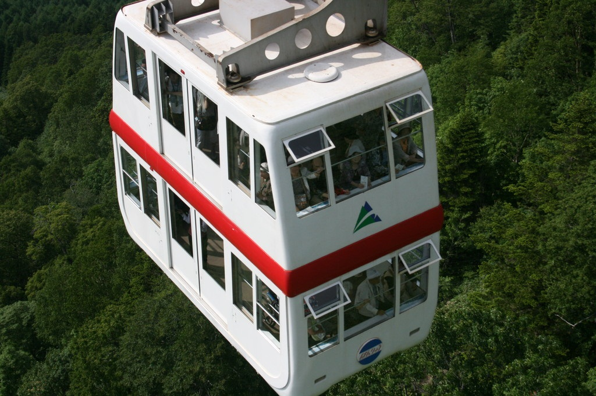
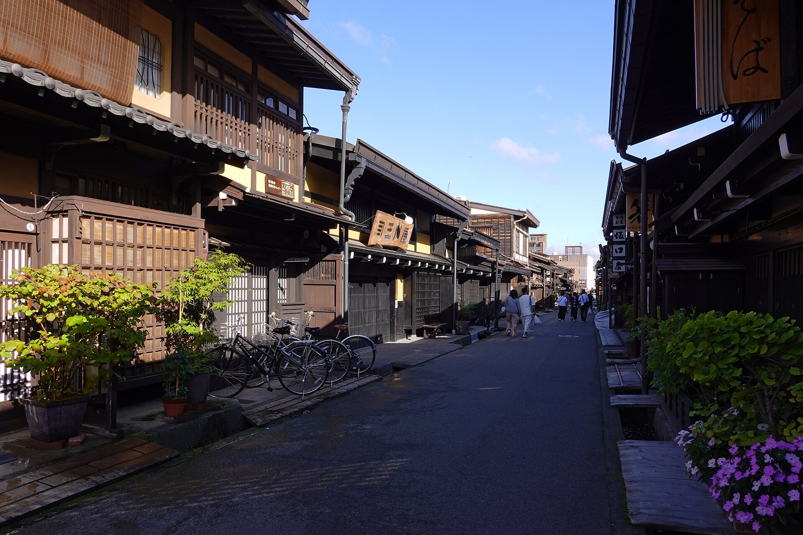
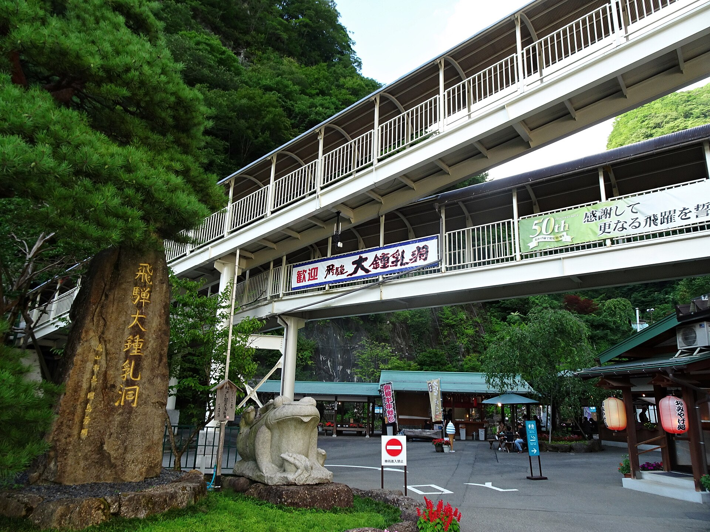
高山 → 新穗高
冬季山路，預鬆時間。 1 月導航去新穗高溫泉停車場。
新穗高纜車
兩段纜車去到海拔約 2,156 米西穗高口。 第二段係雙層車廂， 山頂可望穗高連峰雪山。
成人約 ¥3,800新穗高
簡單午餐。
新穗高 → 高山
保留道路 Buffer。
宮川朝市
漬物、味噌、蔬菜、小食及手工品。
高山陣屋
江戶幕府直接管治飛驒時嘅地方行政機關。 高山陣屋本身冇專用停車場，📍 導航去附近中橋駐車場。
成人約 ¥500三町古街＋中橋＋酒藏
古町家、酒藏、味噌店及傳統老舖。 司機唔試酒。
高山市內
高山拉麵／蕎麥麵。
高山 → 飛驒大鐘乳洞
約 40 分鐘。
飛驒大鐘乳洞＋冰之溪谷
一月重點係大型藍白冰柱。 洞內亦唔太受落雪影響。
成人約 ¥1,100高山地元超市
駿河屋／Valor， 買飛驒牛、蔬果、牛奶及調味料。
DAY 7
🏘️ 白川鄉／新穗高・按 D6 結果
15 Jan 2027・星期五
D6 已完成新穗高 → 白川鄉
｜ D6 未完成 → 按今日天氣決定
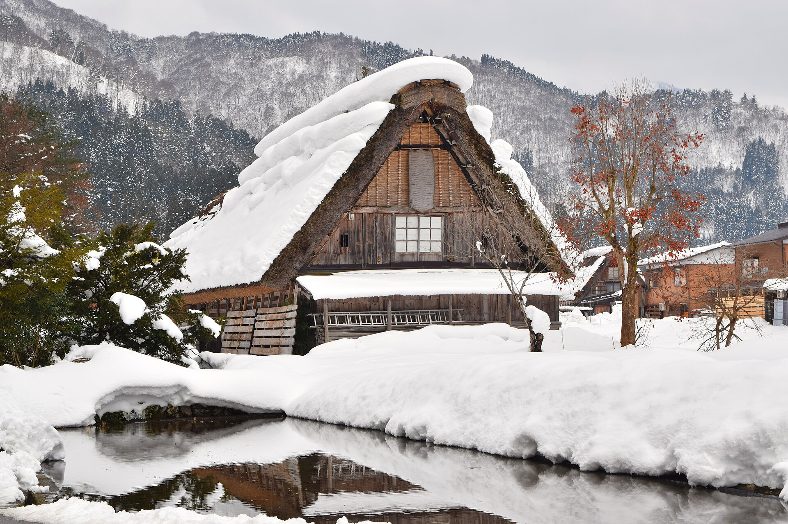
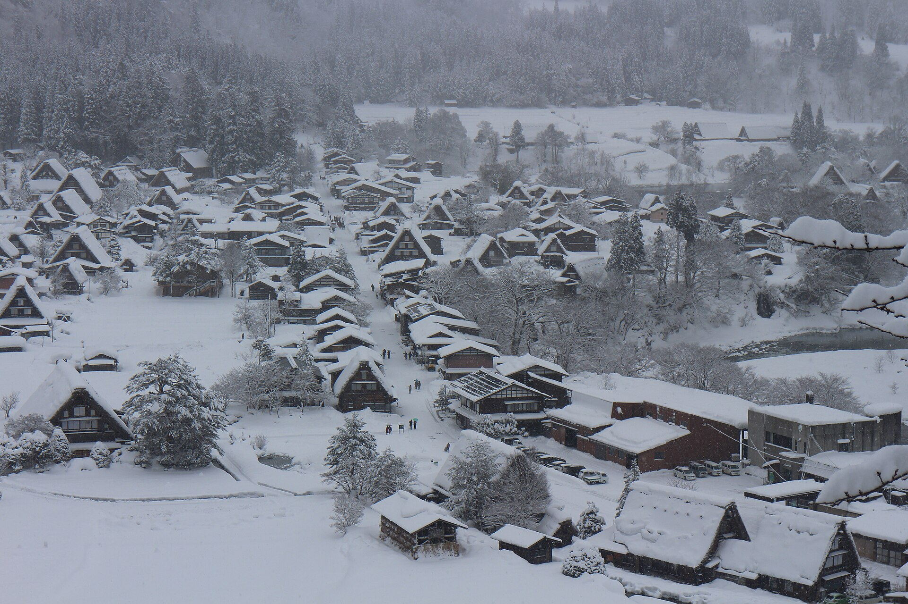
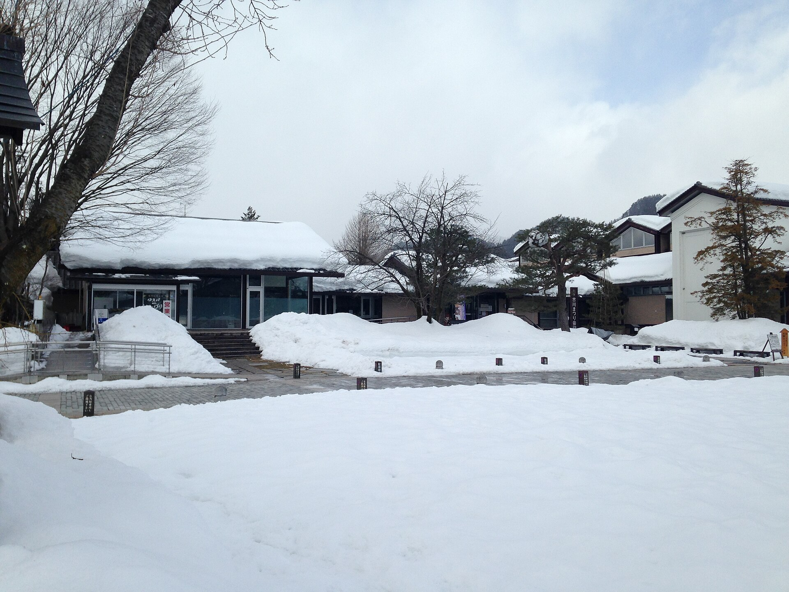
高山櫻庵
退房後搬行李去 Residence。
高山 → 白川鄉
約 1 小時。 導航去官方せせらぎ公園駐車場，唔好直接導航入合掌村。
荻町合掌村
一月厚雪覆蓋合掌造屋頂及農田， 係最具代表性季節之一。
和田家
泊車後步行入村。 睇木樑、圍爐及合掌造結構。
成人約 ¥400白川鄉
鄉土定食／蕎麥麵。
荻町城跡展望台
可俯瞰整個合掌村。 私家車唔可以駛入展望台停車場。
Shuttle 約 ¥300/人/單程白川鄉 → 高山
約 1小時15分。
Residence Hotel Takayama Station
D7 住宿。
📍 新穗高導航仍然用「新穗高溫泉停車場」。
約 10:35–13:15 新穗高纜車。
約 15:20 返回高山。
圖片係飛驒古川冬季街區參考， 唔係三寺巡禮活動當晚實況相。
DAY 8
🚗 完成剩餘主景點 → 松本
16 Jan 2027・星期六
高山市區＋鐘乳洞 / 白川鄉 / 新穗高
→ 松本
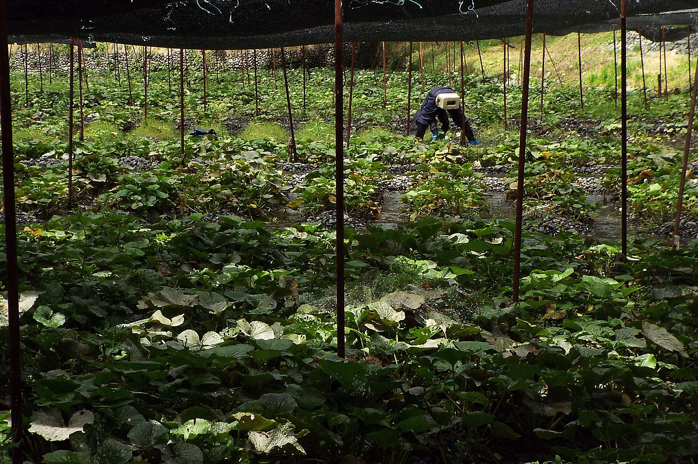
宮川朝市
約 35 分鐘。
高山陣屋
約 40 分鐘。
三町古街＋酒藏
慢行、買手信。
高山 → 飛驒大鐘乳洞
順住去松本方向。
飛驒大鐘乳洞＋冰之溪谷
約 1小時20分。
成人約 ¥1,100飛驒大鐘乳洞 → 松本
經平湯／安房方向。
Iroha Grand Hotel Matsumoto Ekimae
最後一晚。
📍 導航去「白川鄉・せせらぎ公園駐車場」。
10:15–14:00 白川鄉。
14:00 左右離開。
約 17:15 到松本。
高山 → 新穗高
正常運行＋能見度值得先出發。
新穗高纜車
今日係最後機會。 如果仍然大霧／停駛， 唔再追。
成人約 ¥3,800新穗高 → 安曇野／松本
向松本方向落山。
大王山葵農場
非常早到安曇野先加。
免費
DAY 9
✈️ 松本 → AEON → 還車 → 名古屋 → 香港
17 Jan 2027・星期日
AEON Mall 松本 → 入油
→ Times 還車 → JR 特急信濃
→ 名古屋 → NGO → 香港
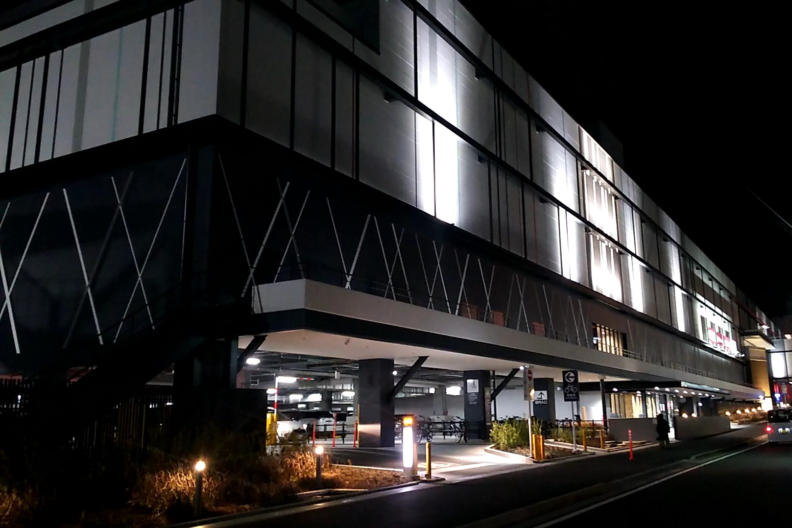
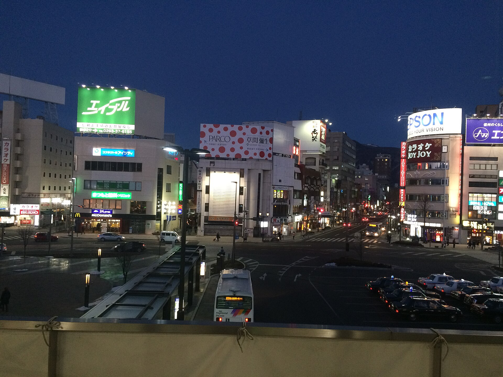
Iroha Grand Hotel
包兩位早餐， 最後執行李。
Iroha
行李全部放車內。
酒店 → AEON Mall 松本
約 15 分鐘。
AEON Mall 松本
最後補貨。 11:00 左右離開係 Hard Cut。
AEON → 油站
11:00 必須離開 AEON。 入滿油、保留單據。 油站到時按 Times 指示／附近油站選擇。
Times 松本站前
開始處理還車。
松本站
目標 12:10 前已經完成還車。 之後先食午餐或買便當。
特急信濃・松本 → 名古屋
現行參考 13:56 → 16:07。
名古屋 → 中部國際機場
現行參考 16:49 → 17:17。
中部國際機場 T2
UO685 Check-in、 保安、晚餐及候機。
名古屋 → 香港
規劃 20:40 起飛， 翌日約 00:30 抵港。
📷 Photo Credits
松本城 — Hiroaki Kikuchi / CC0 — Wikimedia Commons
JR 特急信濃 — Yamaguchi Yoshiaki / CC BY-SA 2.0 — Wikimedia Commons
中部國際機場 — Gnsin / CC BY-SA 3.0 — Wikimedia Commons
白絲瀑布 — Public Domain — Wikimedia Commons
鬼押出園方向淺間山 — Yu.nakai / CC BY-SA 3.0 — Wikimedia Commons
輕井澤王子購物廣場 — Daderot / CC0 — Wikimedia Commons
小布施栗之小徑 — Tawashi2006 / CC BY-SA 3.0 — Wikimedia Commons
澀溫泉夜景 — Totti / CC BY-SA 4.0 — Wikimedia Commons
澀溫泉日間 — Lsattayamas / CC BY-SA 4.0 — Wikimedia Commons
地獄谷雪猴 — Ashley98lee / CC BY 4.0 — Wikimedia Commons
地獄谷步行路 — Abasaa / Public Domain — Wikimedia Commons
AEON Mall 須坂 — 名も無き被験体 / CC BY-SA 4.0 — Wikimedia Commons
白馬岩岳 — Ski Mania / Public Domain — Wikimedia Commons
白馬岩岳望八方尾根 — Ski Mania / Public Domain — Wikimedia Commons
白馬岩岳雪場 — Famifamifami / Public Domain — Wikimedia Commons
新穗高纜車 — Alpsdake / CC BY-SA 3.0 — Wikimedia Commons
高山三町 — 663highland / CC BY-SA 4.0 — Wikimedia Commons
飛驒大鐘乳洞 — ブルーノ・プラス / CC BY 4.0 — Wikimedia Commons
白川鄉冬景 — Raita Futo / CC BY 2.0 — Wikimedia Commons
白川鄉展望台冬景 — Suicasmo / CC BY-SA 4.0 — Wikimedia Commons
飛驒古川冬景 — そらみみ / CC BY-SA 4.0 — Wikimedia Commons
大王山葵農場 — 松岡明芳 / CC BY-SA 4.0 — Wikimedia Commons
AEON Mall 松本 — Razgrad / CC BY-SA 4.0 — Wikimedia Commons
松本站 — contri / CC BY-SA 2.0 — Wikimedia Commons